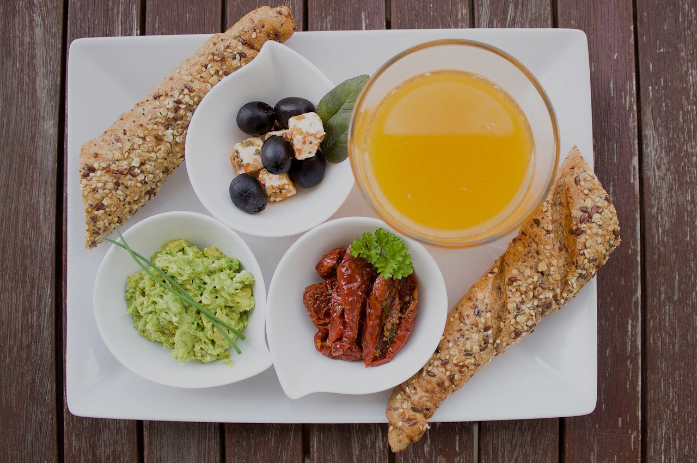
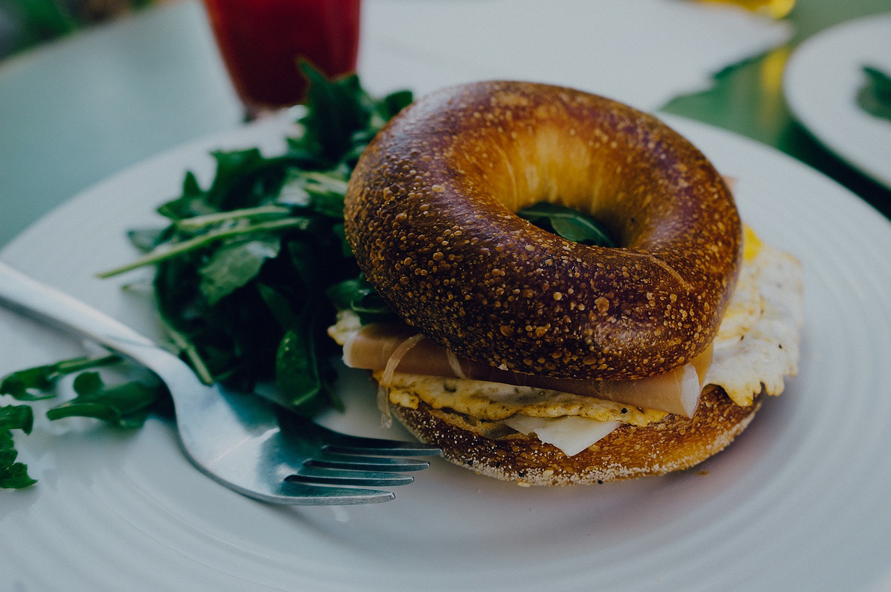
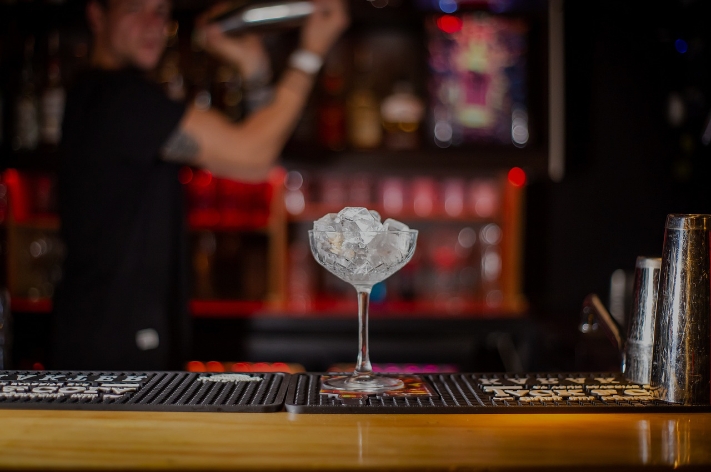

Veni a conocer nuestra carta
Desayunos y meriendas
Todas las opciones incluyen café o infusión a elección
Cafeteria
El café illy es un blend que nace de la unión de nueve diferentes variedades de café Arábica seleccionadas directamente de los mejores cultivos del mundo.

Sandwiches
Hechos con nuestros panes artesanales y acompañados con chips de batata.
Coctelería
Acompaña tus comidas preferidas con nuestra variedad de cervezas. Coctelería clásica y de autor.
Tyson Pizza
La pizza napolitana es considerada uno de los mejores platillos del mundo y el estandarte de una rica tradición italiana que es patrimonio cultural inmaterial de la humanidad. El proceso de fermentación natural requiere paciencia, ya que lleva entre 24 y 48 horas, y se consigue con levadura fresca. Esto permite que la pizza sea fácil de digerir, que sea ligera.
Para identificar una auténtica pizza napolitana hay que poner atención a los siguientes aspectos:
- Orilla gruesa e inflada. Las burbujas grandes y obscuras de la orilla revelan la buena fermentación de la masa y su cocción en un horno italiano.
- Tono dorado uniforme. Si las burbujas son negras pero el resto de la masa es muy claro, quiere decir que el proceso de fermentación no fue adecuado y es muy probable que la pizza resulte difícil de digerir.
- Diámetro. no debe superar los 35 centímetros y su corteza debe tener un promedio de dos centímetros.
- Versiones clásicas. En la más estricta tradición de la cocina napolitana sólo existen dos opciones fáciles de distinguir por sus ingredientes: la emblemática Margherita (Margarita) con todos los ingredientes citados arriba, y la Marinara (Marinera) con tomate, ajo, orégano y aceite de oliva.
- Aroma. Con un perfume ahumado, propio de la leña, en combinación con la albahaca fresca en primer plano.